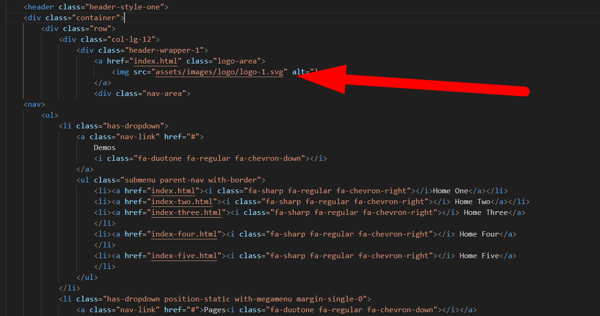

1. Introduction
We would like to thank you for choosing Luminos - IT solutions HTML Template.
We made Luminos from the ground-up with flexibility in mind. Each element of Luminos is extremely customizable, where you can make Luminos to reflect your own branding styles.
The guide gives you detailed methodologies about how you can customize Luminos and make it fit your brand perfectly!
1.1. What's Included
After purchasing Luminos template on themeforest.net with your Envato account, go to your Download page. You can choose to download Luminos template only or the entire Luminos template package which contains the following files:
- Luminos: A HTML template file.
- Documentation: This folder contains what you are reading now.
1.3. Font
@import url('https://db.onlinewebfonts.com/c/d95bf2f30035a050142565e03d44da71?family=Aeonik');
1.4. Source File (CSS)
<link rel="stylesheet preload" href="assets/css/vendor/bootstrap.min.css" as="style" media="print"
onload="this.media='all'">
<link rel="stylesheet preload" href="assets/css/plugins/fontawesome.css" as="style" media="print"
onload="this.media='all'">
<link rel="stylesheet preload" href="assets/css/plugins/magnifying-popup.css" as="style" media="print"
onload="this.media='all'">
<link rel="stylesheet preload" href="assets/css/plugins/swiper.css" as="style" media="print"
onload="this.media='all'">
<link rel="stylesheet preload" href="assets/css/plugins/metismenu.css" as="style" media="print"
onload="this.media='all'">
<link rel="stylesheet preload" href="assets/css/style.css" as="style">
1.5. Source File (JS)
<script defer src="assets/js/plugins/jquery.js"></script>
<script defer src="assets/js/vendor/waw.js"></script>
<script defer src="assets/js/vendor/jarallax.js"></script>
<script defer src="assets/js/plugins/smooth-scroll.js"></script>
<cript defer src="assets/js/plugins/counter-up.js"></script>
<script defer src="assets/js/vendor/waypoint.js"></script>
<script defer src="assets/js/plugins/popup.js"></script>
<script defer src="assets/js/plugins/swiper.js"></script>
<script defer src="assets/js/plugins/svg-inject.js"></script>
<script defer src="assets/js/plugins/metismenu.js"></script>
<script defer src="assets/js/vendor/contact-form.js"></script>
<script defer src="assets/js/vendor/bootstrap.min.js"></script>
<script defer src="assets/js/main.js"></script>
2.1. Change Site Title and Favicon
To change your Site title and Favicon, open the Luminos in your editor and go to the location by following screenshot which are given bellow.
2.2. Change Logo
To change your Site Logo, open the Luminos in your editor and go to the location by following screenshot which are given bellow.
2.3. Header Menu
To customize your Header Menu, open the Luminos in your editor and go to the location by following screenshot which are given bellow.
2.4. Sidebar Menu
To customize your Sidebar Menu, open the Luminos in your editor and go to the location by following screenshot which are given bellow.
3.1. Header
From the located file in the image you can customize you site header layout
3.2. Footer
Here is the file where you can customize your footer
3.3. Global Color
To change Luminos Global Color
4. Content
To customize your Site Content open the Luminos in your editor and go to the location by following screenshot which are given bellow.
Page Content:
4.1. Blog
To customize your Site Blog open the Luminos in your editor and go to the location by following screenshot which are given bellow.
4.2. Testimonial
To customize your Site Testimonial open the Luminos in your editor and go to the location by following screenshot which are given bellow.
4.3. Brand Slider
To customize your Brand Slider open the Luminos in your editor and go to the location by following screenshot which are given bellow.
4.5.Include Default RTL
To set up your template as RTL (Right-to-Left) by adding the dir="rtl" attribute In your (body) tag
5. Support
Support Scope
Included in Free Support Scope:
- Fixing bugs
- Helping clients in changing site contents by sending instructions that couldn’t be covered by documentation
NOT Included in Free Support Scope:
- Any type of custom changes
- Any type of request to update clients’ site contents
Paid Support Scope:
Paid support is not a part of Free Support when you purchase the template from themeforest. We understand that some clients need custom changes while using our template. For that we kept an option for paid support which includes:
- Custom change request
- Custom pages
- Custom features
We kept a flat rate for our paid support which is $25/hour.
Support Ticket
Please send your support request here. You will response within 1 business day.
Regards,
ThemeWant Support Team